Invoice Retrieval Logical Feature Specification
Solution Summary · Sequence and Reuse Assessment · Feature landing page
Revision overview
This separate logical view develops SPEC-SEI-016 for retrieval review. It organises the existing intake, capture, receiving, download and recovery controls into concise scenarios and activity tables. The predecessor remains unchanged and retains full interaction/data inventories and original acceptance traceability.
Existing RRI, PRI, RSD and RCV meanings, Phase 1 scope and product/records boundaries remain unchanged. The supplied FR guide informs engineering qualification in SPEC-SEI-027; it does not redefine the business requirements. Exact physical APIs, acknowledgement effects, records policy and rollout remain open. This draft does not change publication or approve implementation.
1 Purpose, actors and boundary
For a represented recipient, obtain each eligible invoice's actual source file, retain its evidence and support qualified receiving and authorised downloads. Actors are the business, its authorised accountant or service, the product and source platform, and operations. Authenticate the caller separately from permission for the represented business and action. Use the shared glossary. REF-BASE/PRODUCT.
Public collection follows PRD-SEI-211 Phase 1. Private intake follows its selected later-phase scope under RRI-Q01/02. This view does not add ZIP export, buyer acceptance, payment reporting or outbound submission. SPEC-SEI-009 owns later lifecycle behaviour; SPEC-SEI-014 owns source connection and historical route context.
2 Scenarios and observable outcomes
These scenarios select existing behaviour; their activity IDs remain authoritative. API-specific limits and compatibility checks belong to SPEC-SEI-027.
| Situation and actor | Required result | Failure and safe next action / existing coverage |
|---|---|---|
| A public recipient is due for automatic collection | Collect within the qualified scope and retain complete page/item evidence. An optional customer refresh joins the same scoped work. | Missing authority stops protected calls; failed queries do not become empty successes. RSD-01–06; RSD-A01–03/07/10. |
| A private provider notifies Sage or returns metadata | Save the observation, then obtain and verify the required file before file-dependent processing. | Keep FETCH_PENDING with an owner if the file is not available. RRI-A02/03; PRI-01–04. |
| A private provider delivers complete bytes | Capture the supplied file once and use the common receiving checks. | A downstream delay does not require another external fetch. RRI-A01; RSD-04/05. |
| A source repeats an item, or public and private sources cover one invoice | Preserve both observations and qualify one business identity and one product effect. | Changed content or unproven equivalence enters restricted conflict handling. RSD-A05/06; RCV-A13. |
| A supplier sends a correction document or replacement content | Preserve the original. An approved correction document is a separate business document with its qualified correction reference; replacement content is a new observation whose relationship needs a decision. | The same invoice number cannot authorise overwrite of an already delivered invoice. RCV-04/09; RCV-A06/18; REF-BASE Part 2 §3. |
| File capture succeeds but validation, mapping or product receipt fails | Preserve source access permitted by current safety/records policy and recover affected processing. | Do not claim business availability or refetch because the product is unavailable. RSD-A04; RCV-A14–18/23. |
| An authorised business user or accountant downloads a saved file | Return the selected labelled bytes and audit the access result. | Deny the affected read if authority, integrity or ordinary safety fails. RRI-A05/08; RSD-A08/09/14. |
| Notifications are missed, a cursor fails or history expires | Recover a bounded range with existing item identities and separate recovery progress. | Retain an owned visible gap when coverage cannot be proved. RRI-A04; RSD-A10. |
| A client grant or route changes during work | Stop only affected future protected actions; preserve historical evidence and independent client work. | Recheck binding/current authority before the next action or progress commit. RRI-A08; RCV-A19/28/29. |
3 Process and activity order


This existing diagram expands the receiving stage after the summary's intake overview. It distinguishes a durable source from a qualified business invoice. Acknowledgement timing is conditional on the source contract; its drawn position does not require waiting for product receipt. Recover the affected observation or delivery with its original identity. RCV-01–09; REF-BASE.
3.1 Source acquisition and stored-file access
| Existing activity / condition | Required behaviour and outcome | Safe next action |
|---|---|---|
| RSD-01 / public scope due | Check current entity/action authority, environment and eligible source binding before protected calls. | Hold affected calls; preserve history and required client action. |
| RSD-02 / eligible triggers | Combine equivalent refreshes; apply approved capacity and a current numbered work claim. | Other requests observe current work; an old worker cannot commit after takeover. |
| RSD-03 / qualified public run | Discover within approved boundaries and separately fetch exact files where required. Save query scope and continuation evidence. | Distinguish empty success from error. Restrict gap recovery; reconcile possible read effects before unsafe repeat. |
| PRI-01–03 / private arrival or check | Qualify provider/caller and mode. If only a notification, metadata or file reference arrives, download the required invoice file before verified capture. If complete bytes arrive, capture them without a redundant download. | Preserve missing-file, expiry, partial-body or unsupported-profile reasons. Resume the same item. |
| RSD-04 / file obtained | Save exact bytes or an approved immutable reference with matching hash, role, source, profile and time before verified capture. | Incomplete writes or mismatches remain incomplete; unsafe evidence stays restricted. |
| RSD-05 / verified capture | Obtain a durable receiving classification, or retain a recoverable pending handoff with owner. | Retry the existing handoff without refetch. Pending handoff cannot complete a page. |
| RSD-06; PRI-04 / covered boundary | Commit only when each covered item has saved source/classification or an approved ignore outcome. Keep qualified scope and work version. | Preserve the prior checkpoint for incomplete pages. Later mapping/product failure does not undo capture/classification. |
| RSD-08 / detected collection gap | Repeat qualified acquisition over an authorised bounded range with separate recovery progress and stable item identities. | Leave missing history visible; do not replace routine progress with a guessed position. |
| RSD-07 / stored-file request | For a captured public or private file, check current entity/action/file-role authority, safety, integrity and retention. Return labelled saved bytes and audit result. | Deny unsafe/unauthorised ordinary access; record an integrity incident for missing/corrupt content. A failed read is not a new source fetch. |
| RSD-09 / records event | Apply the selected retention/hold policy, preserve authorised historical access and verify exit export before allowed disposal. | A hold blocks deletion; incomplete export prevents disposal. |
RSD-01–09 retain the detailed conditions in REF-BASE Part 2 §2.2. PRI-01–04 retain private contract boundaries in §2.1. These are proposed Sage controls; source APIs do not prescribe the internal storage or worker design.
3.2 Receiving handoff
| Existing activity | Required behaviour and failure outcome |
|---|---|
| RCV-01 Register observation | Use the verified capture receipt; save source identity/hash before downstream processing or an irreversible acknowledgement. Metadata-only arrival remains acquisition pending. |
| RCV-02 Match recipient | Match trusted source context to the exact business, environment, historical route and intended product. Ambiguity or changed binding holds delivery without exposing another client. |
| RCV-03 Assess safety/trust | Apply the selected source/trust policy to received bytes. Unavailable checks remain pending; invalid or unsafe content is restricted. Disable XML external-entity/network resolution. |
| RCV-04 Resolve identity | Compare observation identity before business identity. Keep a candidate until required checks and equivalence evidence complete. A different hash alone does not decide public-copy equivalence. |
| RCV-05 Validate original | Use the activated inbound syntax/profile/rule versions. Preserve invalid, unsupported and unavailable outcomes separately; do not edit the source. |
| RCV-06 Map semantics | Use qualified inbound mapping, preserve provenance and validate target meaning. Missing tax/extension meaning holds business delivery while retaining source access. |
| RCV-07 Publish once | Save a recoverable business/delivery decision. Require stable product deduplication and authenticated receipt before claiming product consumption. Lost receipt resumes the same delivery identity. |
| RCV-08 Acknowledge/reconcile | Respond only at the qualified source milestone and with its exact meaning. Preserve original intent and reconcile an uncertain possible mutation before unsafe repeat. |
| RCV-09 Recover | Assign reason, owner and allowed action. Reprocess preserved source under recorded versions; delivered business facts cannot be silently overwritten. |
The predecessor's Part 2 §3 retains the detailed conditions. Internal approval holds only its named dependent action. It cannot replace buyer acceptance or block independently authorised capture/conservation. Accounting handoff uses its own target/receipt; portfolio work remains per client. RCV-I13–16; RCV-Q12/13; RCV-A26–31.
3.3 Failure and recovery decisions
Use this table to select recovery at the failed activity. It applies to qualified public and private intake and their saved-file downloads. It consolidates the inherited RCV-09 and RSD/PRI recovery rules; existing acceptance IDs retain their full checks in §6 and REF-BASE Part 4. The responses below are proposed Sage controls, not claims that a provider implements them.
| Failure or edge case | Required result and safe next action | Evidence needed to resume or close / accountable roles | Existing acceptance coverage |
|---|---|---|---|
| A webhook is forged, mis-scoped, duplicated, reordered or carries an error | Deny untrusted input without exposing invoice details. Reuse saved observations for repeats. Preserve error/late-event evidence; recover missing work through the qualified source mechanism. | Verified event source/scope and current item state. An error event needs the selected error contract. Events, Security and Integration. | RRI-A02/04/09; RET-API-A02. |
An FR attempt reports ERROR but the current status snapshot looks unchanged |
Read the relevant history item's outcome/code and preserve the final failed attempt. Follow INT-ERR01's code-specific platform retry, configuration correction or support action. Do not create another invoice/key or repeat capture to repair a notification failure. | Qualified event/history/attempt correlation and evidence of the original work. Later retry attempts need separate results. API, Events and Operations; RET-G02/09. | RRI-A04; RCV-A14/20; RET-API-A02/09; INT-ERR01. |
| Caller credentials expire, recipient authority is withdrawn or an accountant loses a client grant | Stop affected protected calls and reads. Preserve source history and independent authorised client work. Do not treat the refusal as an empty collection. | Corrected credentials plus current business/action authority. Recheck before resuming the same item. Identity, client action owner and Integration. | RSD-A01/08; RRI-A08; RCV-A29. |
A source times out, is unavailable or returns 429 |
Keep the run/item pending or failed with its original correlation. Use only the qualified bounded retry policy; honour valid Retry-After instructions. Do not advance successful freshness. |
Current authority and a contract-safe retry or authoritative reconciliation where effects are possible. Integration and Operations; RET-G03/09 set limits. | RSD-A10/16; RET-API-A09; INT-RCV01 Polling. |
| A notified file is not ready, its link expires or it is no longer available | Keep acquisition pending. For a confirmed expired-link 403 in the FR flow, retrieve details again for a fresh link. Other refusals or missing files need their actual source reason. Do not infer deletion or repeat forever. |
Required file role, current access and renewed binding to the intended content. Unrecoverable source history remains an owned gap. Integration, provider owner and Records. | RRI-A02/03/06; RET-API-A04; INT-RCV01 §4. |
| A transfer is interrupted, or only some required files arrive | Retain verified files and per-file failures. Keep affected file-dependent work incomplete. Retry only missing/failed transfers under the qualified contract; do not discard captured files or create another invoice. | Every file required for the named next step has a verified receipt or an approved policy disposition. Optional files follow their own policy. Stable file-role/content binding remains RET-G04. Integration and Records. | RRI-A03/06; RSD-A03/14; RET-API-A04. |
| A page fails, a cursor expires, events are missed or recovery exceeds available history | Keep the last proved boundary; run bounded gap recovery separately. Do not report successful empty collection or complete coverage from a partial page. | Saved item outcomes and qualified continuation or recovered-range evidence. Unavailable history remains visible, including FR coverage beyond the stated 90-day creation window. Retrieval, provider/API owner and Operations. | RSD-A03/07/10; RRI-A04; RET-API-A03. |
| Concurrent workers observe the same invoice, or private original/public copy differ | Reuse the committed business identity only after required checks and equivalence evidence. Preserve both observations. Changed bytes or material differences remain restricted conflict. | Recipient/trust/profile checks and an approved business-meaning decision; hash difference alone is insufficient. Receiving and Records; country specialist for equivalence. | RSD-A05/06; RCV-A13; RET-API-A07. |
| Recipient/route is wrong or ambiguous; a file is unsafe, untrusted, invalid or unsupported | Deny or quarantine as appropriate. Prevent ordinary exposure and business delivery. Keep invalid evidence distinct from a temporarily unavailable check. | Authorised resolution and passing required checks under a qualified profile. No ordinary retry releases quarantine. Routing, Security, Validation and Records. | RSD-A09; RCV-A17/21/22; RET-API-A01/04/07. |
| Bytes and metadata disagree, storage fails, or a worker crashes during capture/progress commit | Keep capture or coverage incomplete. Reconcile the original capture/commit identity and reject stale-worker updates. Do not skip the item or publish inconsistent references. | Verified bytes/hash/metadata and durable item classification under the current work claim. Records, Retrieval and Architecture. | RSD-A03/07/14; RCV-A15; RET-API-A09. |
| Validation or mapping is unavailable, returns late, or fails to preserve required meaning | Hold business processing; resume the saved operation or make an authorised versioned attempt from preserved bytes. Safe source access remains independently governed. | Result matches the saved source/scope/version and passes required source/target checks. Task acceptance is not success; no silent source repair or overwrite of delivered facts. Validation, DTS and Receiving. | RCV-A16–18/22/23; RET-API-A07. |
| Optional rendering or hybrid generation fails | Keep the derived-file request pending/failed separately. Preserve captured source and its independently permitted access; do not mark a missing rendering as the original. | Qualified generation result with correct provenance if that optional feature is enabled. API, Format and Records; RET-G08. | RRI-A06; RCV-I05; RET-API-A08. |
| Product is unavailable, rejects its schema, or applies the invoice but its receipt is lost | Retain pending/held delivery and query or replay the original delivery identity under proven repeat safety. Do not fetch the source or create another invoice to bypass the failure. | Authenticated evidence of the product's business effect, or a corrected qualified handoff. Product and Receiving. | RCV-A14/15/17; RET-API-A09. |
| A source acknowledgement or other possible mutation has an unknown result | Keep the original intent, payload and source context. Reconcile before unsafe repetition. Without authoritative query or proven repeat safety, assign manual resolution. | Evidence of the original effect or an approved evidence-backed disposition. Escalation alone is not completion. Integration and Operations. | RSD-A16; RRI-A09; RCV-A20. |
| A route/provider changes, or a late invoice arrives during transition | Preserve original source and historical binding. Hold ambiguous late delivery; do not move an uncertain operation to the new route. Isolate each client's work. | Approved late-arrival/product binding and current action authority. Routing, Product and Records. | RSD-A11; RCV-A19/28/29. |
| A saved-file download is interrupted, denied, missing or corrupt | Audit the actual result; do not claim the recipient retained the file. Repeat/resume only under current authority and the qualified transfer contract. Missing/corrupt stored bytes open an integrity incident rather than an ordinary source fetch. | Verified stored content and permitted access; Records proves restore or reconciles an unresolved loss. Access, Records and Operations. | RRI-A05/08; RSD-A08/09/14; RET-API-A05. |
| A retention hold or provider exit conflicts with disposal | Keep required evidence and permitted historical access. Block deletion under hold and disposal before verified export. | Approved records policy, hold disposition and verified export/restore evidence. Records and Compliance. | RSD-A11; RCV-A24; RET-API-A05. |
Record the affected business/item, failed activity, safe reason, original operation, owner, next action and evidence needed to resume. Keep retry, pending client action, restricted quarantine and unknown external outcome distinct. Retry limits, wait policy and alert thresholds remain RSD-G07/RCV-Q11 and RET-G03/09. INT-ERR01's six-day support guidance applies only to its named FR codes; it is not a general retry policy or Spain allowance. When the qualified retry policy is exhausted or no safe automatic action exists, stop automatic repetition and retain an owned unresolved case. An operator cannot bypass authority, alter a checkpoint directly or replace original bytes. REF-BASE Part 4, readiness and operational evidence.
4 Shared controls and Spain binding
| Boundary | Authoritative rule and evidence |
|---|---|
| Separate outcomes | RRI-R02; RCV-I10; REF-BASE Part 2 §1.1. Discovery, capture, classification, product availability, consumption, source response and business decisions are separate facts. Proposed state labels are not external codes. |
| Lifecycle message handoff | SPFE-S22 §§1–4/L1 provides supplementary evidence for the eight actor-specific Annex II codes already recorded in SPEC-SEI-009. Technical quarantine, download failure or an FR processing error cannot generate recipient REJECTION or payment/cancellation messages. Final SPFE-S02 Annex II governs legal meaning; field/schema qualification remains open. |
| Complete progress | RSD-R03/04; RRI-R04. Classification can precede final mapping only with durable source, saved processing state and recovery ownership. Capture without classification is insufficient. |
| Spain public discovery | RSD-SPFE-R01: GetRegisteredInvoice / QUERYBYFILTER uses presentation date; GetInvoices / QUERYBYID consults identities/final states. Catalogue maxima are 1000 results/identifiers respectively. Preserve SECUENCE_ID; wire continuation remains open. SPFE-S03/S14/S15. |
| Spain source-file recovery | RSD-SPFE-R02/03: use separately qualified DownloadInvoicesByLOC or DownloadInvoicesByID. ID downloads have catalogue maximum 100 invoices; do not borrow this for LOC. Locator, invoice identity and MessageId remain distinct. SPFE-S03/S12/S13. |
| Spain authority | RSD-R01; SPFE-S02 Articles 9–11. Qualify registered third-party authority independently of transport credentials. Catalogue issuer/social-collaboration and locator-certificate branches cannot be assumed to authorise recipient recovery. |
| Spain representation | RCV-SPFE-R02; SPFE-S08/S09. Qualify public UBL 2.5 profile and source CopyIndicator; preserve original/copy/derived files. The example's conflicting ProfileID remains a gate. |
| Reuse and country isolation | RRI-R03/05; RSD-R09; RCV-R14. Assess existing DTS first where mapping is needed. Pin build, input/output direction, rules and run owner. Spain identity, records and public rules cannot change France or another country. |
5 Decisions and technical analysis boundary
The existing RRI-Q01–03, RSD-G01–09 and RCV-Q01–13 remain the decision record in REF-BASE. The engineering view maps the supplied API evidence to those gates. No new service boundary, physical schema, cadence, SLA, retention duration or acknowledgement deadline is approved here.
Failure scenarios are specified in §3.3, but recovery is not implementation-proven. The selected provider's error/read/acknowledgement contract, file-set binding, older-history recovery and retry/escalation policy remain activation evidence. An unresolved gate prevents claiming that its dependent recovery path is ready.
The FR guide's notification, list, detail and presigned-file operations are implementation candidates. Its 90-day query window is a coverage limit to qualify, not a product recovery policy. Its optional Factur-X request is derived-file generation, not the receiving requirement or the default Spain source representation. INT-RCV01 §§3.1–4 and Polling.
6 Functional acceptance
These are required acceptance scenarios, not executed implementation tests. Existing IDs retain their full source checks in REF-BASE Part 4.
| Existing acceptance IDs | Evidence required |
|---|---|
| RSD-A01/08; RRI-A08; RCV-A27/29 | Caller authentication cannot bypass business/action authority. Revocation blocks affected source calls and stored reads while other authorised client work continues. SPFE-S02 Article 11. |
| RSD-A02/03/07; RCV-A15 | Concurrent triggers and a crash around capture/progress recover without skipped items or stale-worker commit. Missing bytes or pending handoff cannot complete coverage. |
| RRI-A01–03/06 | Complete private bytes avoid redundant fetch. Metadata-only notifications remain pending. Expired/partial fetches preserve item identity; a rendering cannot substitute for the required source. |
| RRI-A04; RSD-A10/16 | Missed/reordered events and incomplete query history retain evidence of the gap. An unknown possible source mutation is reconciled before unsafe repeat. No false freshness or all-history claim. |
| RSD-A05/06; RCV-A13 | Concurrent public/private observations create one business effect only after required recipient/trust/profile/equivalence checks. Material conflict remains owned and restricted. SPFE-S02 Article 6; SPFE-S08/S09. |
| RSD-A04/09/14; RRI-A05; RCV-A23 | Source access is independent of mapping/product success and subject to current authority/safety. Unsafe or corrupt bytes are not served as ordinary files. |
| RCV-A14/16–18/20 | Mapping task acceptance is not completion. Lost product receipt uses the original identity. Reprocessing preserves earlier evidence. Source acknowledgement does not create buyer acceptance. |
| RCV-A26/28/30/31 | Internal review, accounting transfer and portfolio results remain independent from capture and buyer lifecycle. Ineligible/stale approval cannot release a hold. A lost accounting receipt cannot create another invoice. |
| RSD-A11/13/15; RCV-A22/24; RRI-A07/10 | Historical access/holds survive route changes. Qualify actual reused build and inbound DTS mapping. Missing Spain country binding blocks the selected mode; another country's behaviour is unchanged. |
| RSD-SPFE-A01–03; RCV-SPFE-A01–03 | Presentation-date discovery, qualified continuation, separate downloads and recipient authority are proven with partial failures. Query success cannot create file capture. SPFE-S02/S03/S08/S12–15. |
REF Source references
| REF ID | Source and version/date | Exact location | Supported claim and limit |
|---|---|---|---|
| REF-BASE | SPEC-SEI-016, updated 20 October 2026 | Part 2 §§1–5.1; Part 4; Part 3 inventories | Existing requirement/activity/acceptance IDs and proposed logical controls; not deployed contracts. |
| REF-PRODUCT | PRD-SEI-211, updated 20 October 2026; PRD-SEI-223, updated 7 October 2026 | PRD211 Phase 1, FR1–55, retrieval/download boundary; PRD223 FR17–20/43–44 | Canonical scope and receiving/reuse outcomes, subject to recorded status. Proposed Sage safeguards remain design controls. |
| INT-RCV01 | Supplied FR guide extract, received 22 October 2026; revision unknown | Sections 1–4 and Polling | Candidate API facts and coverage limits; no Spain implementation evidence. |
| INT-ERR01 | FR error-handling extract, received 22 October 2026, revision/build unknown | Processing and error fields; ERR-RECEIVING-DOC, ERR-RECEIVING-NOT; Recovery interpretation |
History-only attempt outcomes and code-specific retry/support actions. No automatic consumer resend or universal six-day policy. |
| SPFE-S22 | Separate Annex II, received 22 October 2026, filename date 21 October; release unverified | §§1–4 pp. 4–14; rejection list L1 p. 15 | Lifecycle code/actor/field evidence, not file-retrieval or AEAT processing-error contracts. Final SPFE-S02 Annex II remains legal baseline; comparison. |
| SPFE-S02 | Final Order HAC/1028/2026, published 5 October 2026 | Article 6; Articles 9–11, PDF pp. 8–11 | Spain public identity, recovery/access and representation. Does not define internal storage or public wire fields. |
| SPFE-S03 | Original catalogue, 0.1.0, 9 October 2026 | Sections 6.4–6.7, pp. 12–15 | Operation purposes, roles, limits and SECUENCE_ID. Complete query/download formats and side effects remain unqualified. |
| SPFE-S08 | Original formats, 0.1.0, 9 October 2026, BORRADOR | §5.1.1 p. 8; §§5.4–5.7 pp. 14–15 | UBL 2.5 InvoiceType; query/download formats pending. Not a full validator. |
| SPFE-S09 | Original factura.xml, supplied 13 October 2026 | cbc:ProfileID; cbc:CopyIndicator |
Example profile conflict and original classification only; not a complete faithful-copy contract. |
| SPFE-S12–15 | DownloadInvoicesByID, DownloadInvoicesByLOC, GetInvoices, GetRegisteredInvoice, supplied 13 October 2026 | Named operation, binding and service ports in each file | Exact operation names and PRE transport; generic payload descriptions do not complete business schemas. |
| REF-EVIDENCE | RES-SEI-002, repository evidence baseline | REF; SPFE-Q06/Q09/Q12–14/Q17 | Reading route to originals and unresolved conflicts; source inventory completeness is not mapping readiness. |